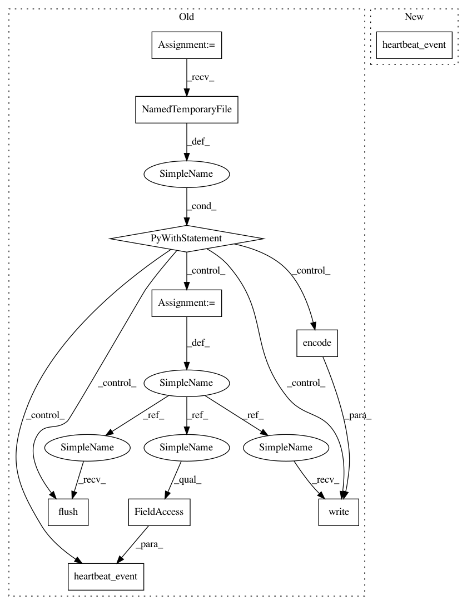

8d16197f88d01ab8521c872e0be7b902d8ce545d,tests/test_observers/test_tinydb_reader.py,,run_test_experiment,#Any#Any#Any#,55
Before Change
// Heartbeat
info = {"my_info": [1, 2, 3], "nr": 7}
outp = "some output"
with tempfile.NamedTemporaryFile() as f:
f.write(outp.encode())
f.flush()
tinydb_obs.heartbeat_event(info=info, cout_filename=f.name,
beat_time=T2)
// Add Artifact
filename = "sacred/__about__.py"
name = "about"
tinydb_obs.artifact_event(name, filename)
After Change
// Heartbeat
info = {"my_info": [1, 2, 3], "nr": 7}
outp = "some output"
tinydb_obs.heartbeat_event(info=info, captured_out=outp, beat_time=T2)
// Add Artifact
filename = "sacred/__about__.py"
name = "about"
tinydb_obs.artifact_event(name, filename)
In pattern: SUPERPATTERN
Frequency: 4
Non-data size: 10
Instances
Project Name: IDSIA/sacred
Commit Name: 8d16197f88d01ab8521c872e0be7b902d8ce545d
Time: 2016-12-02
Author: qwlouse@gmail.com
File Name: tests/test_observers/test_tinydb_reader.py
Class Name:
Method Name: run_test_experiment
Project Name: IDSIA/sacred
Commit Name: 8f4e540ad90e2722fb000d7934339f3e68df7f44
Time: 2016-07-06
Author: qwlouse@gmail.com
File Name: tests/test_observers/test_mongo_observer.py
Class Name:
Method Name: test_mongo_observer_heartbeat_event_updates_run
Project Name: IDSIA/sacred
Commit Name: 8d16197f88d01ab8521c872e0be7b902d8ce545d
Time: 2016-12-02
Author: qwlouse@gmail.com
File Name: tests/test_observers/test_sql_observer.py
Class Name:
Method Name: test_sql_observer_heartbeat_event_updates_run
Project Name: IDSIA/sacred
Commit Name: 8d16197f88d01ab8521c872e0be7b902d8ce545d
Time: 2016-12-02
Author: qwlouse@gmail.com
File Name: tests/test_observers/test_mongo_observer.py
Class Name:
Method Name: test_mongo_observer_heartbeat_event_updates_run